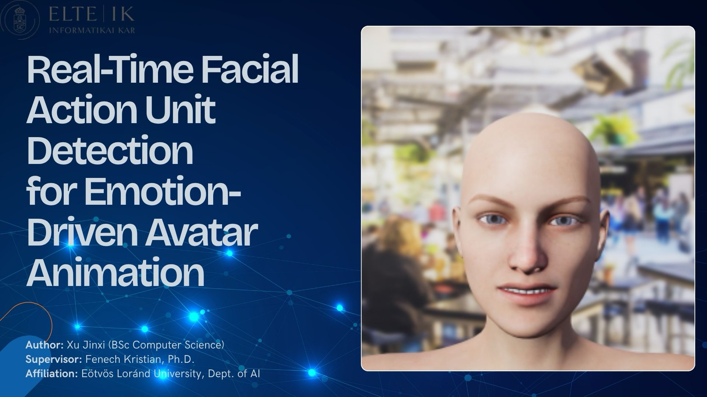
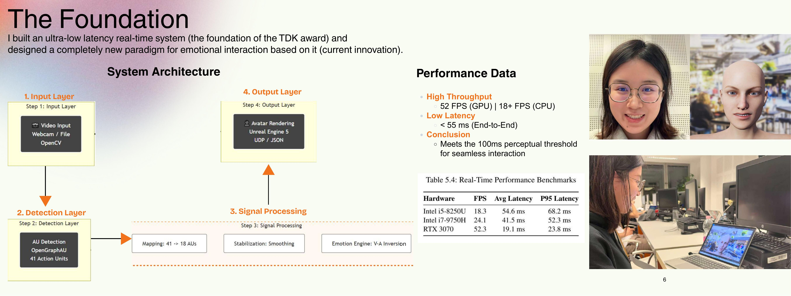
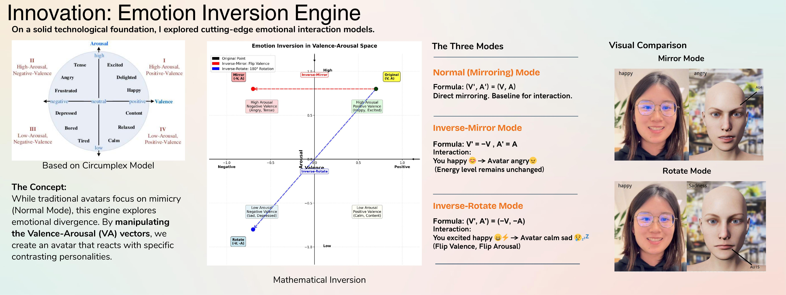
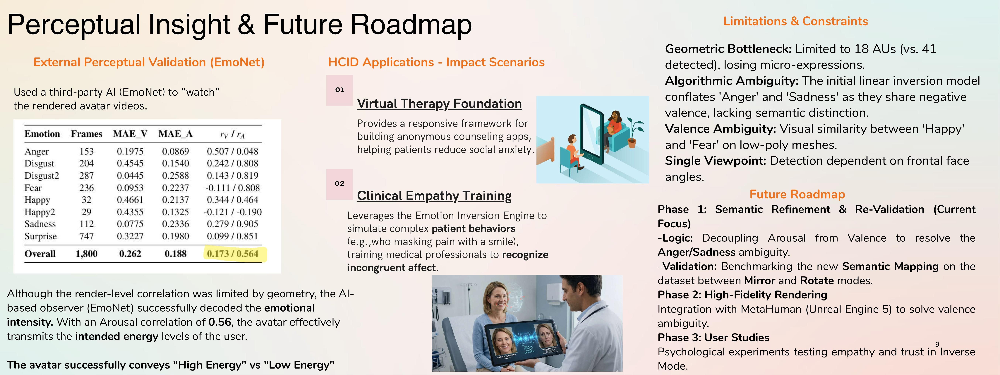

Making expression feel immediate.
I built a low-latency pipeline from facial expression to avatar control: 52 FPS on GPU, 18+ FPS on CPU and end-to-end latency below 55 ms.
Research / Aug 2025 — Feb 2026 · TDK First Prize
A real-time facial Action Unit system that drives an avatar — then deliberately reimagines how that avatar feels.
I built a low-latency pipeline from facial expression to avatar control: 52 FPS on GPU, 18+ FPS on CPU and end-to-end latency below 55 ms.
The Emotion Inversion Engine works in Valence–Arousal space. Beyond mirroring, it can generate an intentionally contrasting affective response — a way to study emotional incongruence.
The direction is clinical empathy training and affective computing: higher-fidelity rendering, semantic refinement and user studies.



